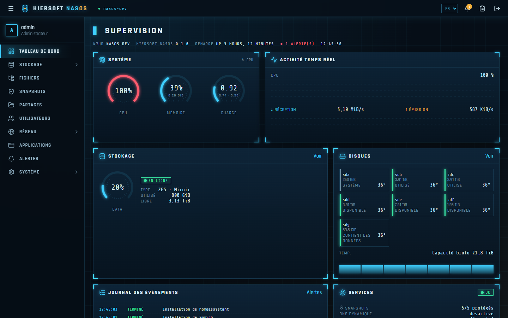
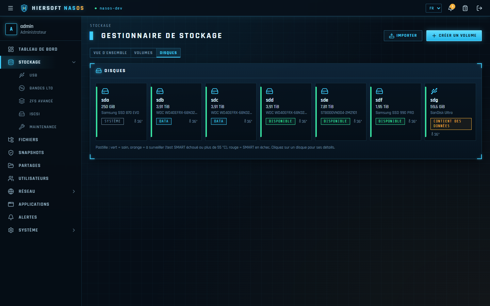
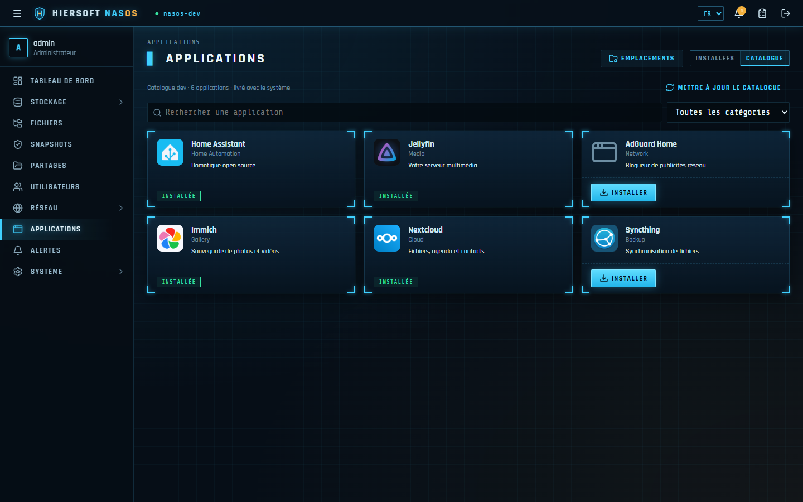
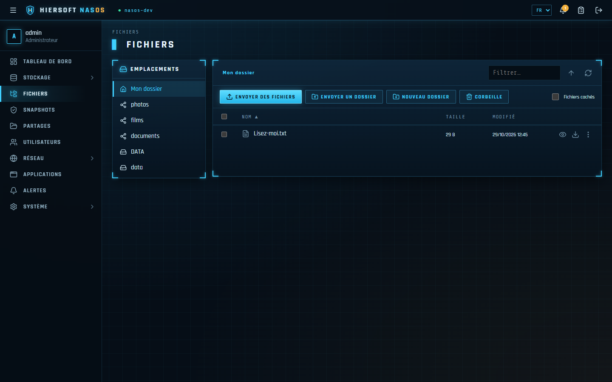

Maintenance, conseil, support et développement d'outils sur mesure pour les particuliers, les indépendants et les petites entreprises. Éditeur de Hiersoft NasOS, notre système de stockage réseau.
Un interlocuteur unique pour faire fonctionner, sécuriser et faire évoluer votre informatique — sans jargon, sans dépendance.
Entretien préventif des postes, serveurs et NAS, mises à jour, surveillance des disques et des sauvegardes, intervention en cas de panne.
Audit de l'existant, stockage et sauvegarde, sécurité, réseau, choix du matériel et des logiciels adaptés à votre budget.
Assistance à distance ou sur site, résolution d'incidents, accompagnement et prise en main de vos outils.
Outils logiciels sur mesure : applications web, automatisation, intégrations entre vos logiciels, scripts et services.
Transforme un PC ou un serveur en NAS complet : simple comme ZimaOS, solide comme TrueNAS. Vos données restent chez vous, sans abonnement ni cloud imposé.




RAID, compression, chiffrement, datasets, import de volumes existants.
Snapshots quotidiens, « Versions précédentes » sous Windows, corbeille des partages.
Windows, macOS (Time Machine), Linux et liens de partage sécurisés.
Jellyfin, Nextcloud, Immich, Home Assistant… installées et réglées en un clic.
QR code pour le téléphone, DNS dynamique, certificat HTTPS automatique.
Lecture vidéo et musique dans le navigateur, rangement des photos par date, doublons.
| Minimum | Recommandé | |
|---|---|---|
| Processeur | x86-64, 2 cœurs | 4 cœurs ou plus |
| Mémoire (Btrfs) | 4 Go | 8 Go |
| Mémoire (ZFS) | 4 Go | 8 Go, 16 Go avec beaucoup d'applications |
| Disque système | 32 Go (SSD conseillé) | 64 Go ; 128 Go pour y installer les applications |
| Démarrage | BIOS ou UEFI, Secure Boot désactivé | |
Un vrai interlocuteur, qui prend le temps de comprendre votre activité avant de proposer une solution.
Vos données vous appartiennent : logiciels ouverts et solutions hébergées chez vous.
Debian, ZFS, Btrfs, WireGuard : des bases éprouvées, utilisées par les plus grands.
Une question, un devis, une intervention, une démonstration de NasOS ou un outil à développer ? Écrivez-nous.
hiersoft@salade.io → Hiersoft
Hiersoft